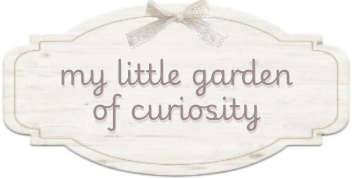
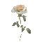
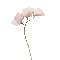
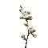
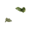
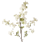
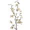

 ꒰ what is this ? ꒱
꒰ what is this ? ꒱
꒰ what is this ? ꒱knowledge gardening is the gentle practice of planting little sprouts of information and tending them with wonder, giving them space to grow and bloom.
i am gathering wildflowers of curiosity in here, one at a time, patiently watching the garden become richer with every season of life.
find more fragments ..

or come inside and have a cup of tea ♡



a forest can make its own rain. trees release water vapor into the air through their leaves, helping clouds form and influencing rainfall.

the tiny hairs on a spider's legs help it sense vibrations, allowing it to feel the world through delicate threads of silk.


some desert plants bloom after years of waiting, their seeds remaining dormant until rain finally arrives.

a pinecone can predict humidity. its scales open and close depending on moisture in the air, helping release seeds when conditions are favorable.

certain flowers change color as they age, leaving little visual messages for pollinators about where nectar can still be found.


the scent of a rose is partly a defense. some of its fragrant compounds help protect the flower from insects and microbes.


some ants grow gardens. leafcutter ants cultivate fungi inside their nests, feeding on the harvest.
certain whales sing songs that change over time, with entire populations sometimes sharing evolving musical patterns.

a sea star can regrow lost arms, and even an entire body from just a single arm, as long as a portion of the central core of their body remains attached.

saturn could float in water if there were a bathtub large enough, because its average density is lower than water.

a rainbow can appear in moonlight. these are called moonbows, and they are especially visible when the moon is bright and rain is falling.
sunflowers follow the sun when young, but mature flowers generally face east.
some flowers produce heat, warming their centers to attract pollinators.
rain has a scent called petrichor, released when raindrops touch dry soil.
the moon is slowly drifting away from earth, about 3.8 centimeters each year.
a cloud can weigh hundreds of tons, despite floating so gently above us.
moss can survive drying out and revive when water returns.
sea otters hold hands while sleeping so they do not drift apart.
crows can remember human faces and recognize people who have treated them kindly or badly.
goats have rectangular pupils, giving them a wide field of vision.
a snail have thousands of tiny teeth on its tongue-like radula.
sea dragons have long, leafy appendages used for camouflage and they belong to the same biological family as seahorses, called syngnathidae.
the ancient, towering fossil organism prototaxites belonged to a completely separate and now-extinct lineage of complex multicellular life rather than being a giant fungus or plant.
the word “alphabet” comes from the first two greek letters : alpha and beta.
honey has been used to help preserve food and in medicinal preparations for thousands of years.
vanilla comes from an orchid, making it one of the few edible fruits produced by an orchid.
the smell of freshly cut grass is partly a chemical distress signal released by the plant.
some old trees are older than entire civilizations, quietly growing through centuries of human history.
some flowers bloom only at night, opening their petals when the world grows quiet and moths begin their visits.
a strawberry wears its seeds on the outside, like tiny golden buttons sewn onto its red coat.
the oldest living trees can carry memories of centuries in the rings hidden inside their trunks.
a raindrop is not shaped like a teardrop when it falls. tiny drops are round, while larger ones flatten as they move through the air.
bees can recognize faces, learning patterns of eyes, noses, and mouths much like we do.
the earth is not a perfect sphere, but rather an oblate spheroid, slightly flattened at the poles and bulging at the equator.
sea otters sometimes keep a favorite stone, using it as a tool to open shells.
spiders can travel through the air by releasing silk threads that catch the wind, a journey called ballooning.
a hummingbird can fly backward, something most birds cannot do.
the natural fragrance of flowers exists to attract pollinators, which help them reproduce.
the shortest day of the year is the winter solstice, when the sun reaches its lowest point in the sky.
fireflies glow through a chemical reaction, carrying their own little lanterns in the dark.
the great barrier reef is the largest living structure on Earth, stretching over 2,300 kilometers.
a snail's shell grows with it, adding new layers as the tiny creature becomes bigger.
the earth's magnetic field protects us from harmful solar radiation, deflecting charged particles away from our planet.
the tiny holes in a sponge help it filter water and collect food, making it a little underwater sieve.
a rainbow is a circle, but from the ground we usually see only an arc because the horizon hides the rest.
the word “window” comes from old norse words meaning “wind eye”.
a cat's whiskers help it sense spaces, acting like delicate little measuring instruments around its face.
there are flowers that smell like chocolate, including some species of orchid.
the ocean has underwater waterfalls, where dense, salty water flows down beneath lighter water.
certain mushrooms glow in the dark, creating tiny points of natural light among the forest floor.
a single cloud can contain millions of tiny water droplets, each one floating together in a soft white kingdom.
the earth is constantly humming, producing subtle vibrations that scientists can measure even when we cannot hear them.
some seeds can sleep for hundreds of years, waiting patiently for the right conditions to awaken.
the atmosphere of venus is so thick, that it would feel like being underwater if you could stand on its surface.
some flowers can hear buzzing bees, and evening primrose flowers have been observed responding to the sound of pollinators by increasing the sweetness of their nectar.